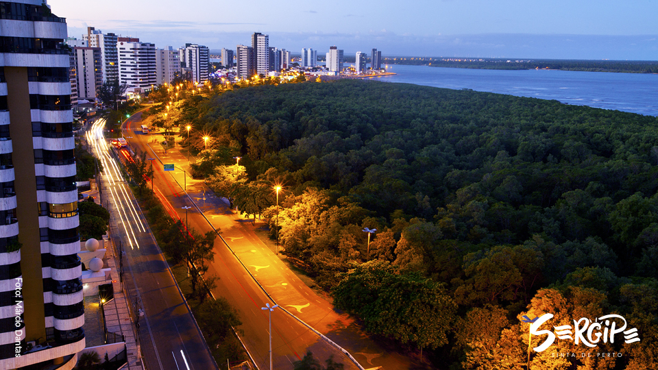

Sergipe é o menor estado do Brasil, localizado na região Nordeste. Sua capital é Aracaju, uma cidade charmosa e acolhedora. Sergipe é conhecido por suas praias bonitas, como a Praia do Saco e a Praia de Atalaia, além de ter uma cultura rica, com festas tradicionais, música e culinária deliciosa, incluindo pratos como o caranguejo e a moqueca. O estado também possui áreas de natureza preservada, como o Parque Nacional da Serra de Itabaiana, que oferece belas paisagens e trilhas.
